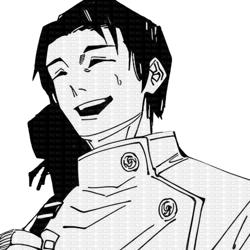

The Cursed Child
Yuta Okkotsu is a Special Grade Jujutsu Sorcerer and the main protagonist of the Jujutsu Kaisen 0 prequel, who becomes a central supporting character and key defender in the main Jujutsu Kaisen series.

Yuta Okkotsu is a Special Grade Jujutsu Sorcerer and the main protagonist of the Jujutsu Kaisen 0 prequel, who becomes a central supporting character and key defender in the main Jujutsu Kaisen series.
